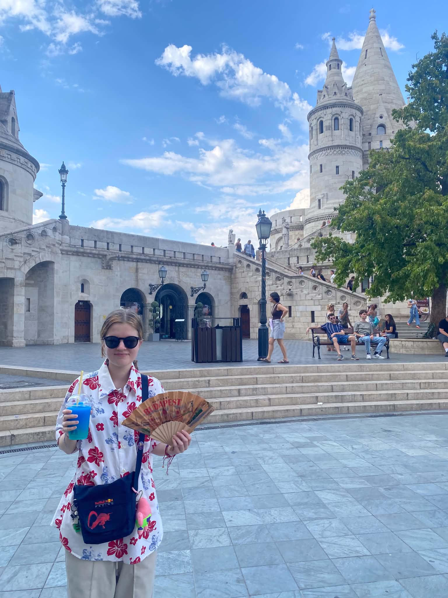

I'm Olivia Keraite. I am a published writer and an aspiring author!
See my work Follow me on InstagramI have worked for several online magazines (The Teen Magazine, The Neowise Magazine and The Unfolded Mind). Holding positions such as being a writer and a co-editor in chief of Art and Literature. Recently, I have written numerous articles that dive into how mental health is depicted in media. Besides helping other writers get published, I have had my own poems published in more than 10 magazines!
Since March 16th 2025!
Through my email oker9977@gmail.com or my Instagram @thegreenpoem
I am currently working on the first draft of it, so stay tuned!